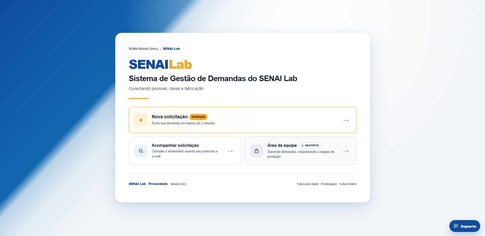

Difícil saber o que chegou, o que já foi alterado e em que etapa está.
Sistema de Gestão de Demandas
Uma forma mais simples de organizar o dia a dia do SENAI Lab.
Centraliza solicitações, autorização, acompanhamento e operação da equipe em um único fluxo.
Conectando pessoas, ideias e fabricação.

Por que a plataforma existe?
Menos informação espalhada. Mais organização.
Quando cada pedido chega por um caminho diferente, acompanhar tudo fica mais difícil. A plataforma reúne o processo em um só fluxo, com critérios claros desde a entrada até a entrega.
→
Cada solicitação fica registrada, recebe protocolo, passa por autorização e pode ser acompanhada até a conclusão.
Visão geral
O fluxo é simples e tem uma etapa clara de autorização.
O colaborador registra o que precisa. A Administração faz a triagem e, somente depois de autorizada, a demanda entra na operação da equipe do Lab.
Colaborador FIEMG registra a necessidade.
O sistema identifica a solicitação com LAB-XXXX.
A Administração analisa e autoriza ou recusa.
A equipe recebe somente demandas autorizadas.
Produção, histórico e acompanhamento até a entrega.
Para quem solicita
Abrir uma demanda leva poucos minutos.
Não precisa criar conta. O acesso para novas solicitações é exclusivo para colaboradores FIEMG e exige o e-mail corporativo @fiemg.com.br.
Nome e e-mail @fiemg.com.brTipo de serviçoDescrição do que precisaQuantidade e dataArquivos do projeto
Nova solicitaçãoFIEMG
Enviar solicitação
Acompanhamento
Depois do envio, a pessoa não fica no escuro.
Com o protocolo e o mesmo e-mail corporativo usado no cadastro, ela consulta o andamento sem precisar entrar em contato com a equipe toda hora — inclusive enquanto aguarda a autorização inicial.
LAB-0001
Solicitação enviadaAguardando autorizaçãoEm análiseEm produçãoFinalizado
Acesso interno
Cada perfil enxerga somente o que precisa para trabalhar.
O acesso é individual e autenticado. A Administração faz a triagem das novas solicitações; a equipe operacional trabalha apenas com as demandas já autorizadas.
AdministraçãoEquipe do LabAcesso autenticado
LAB-0001PrototipagemAguardando autorização
Gestão da demanda
Depois da autorização, cada pedido entra com clareza na operação.
Qualquer integrante autorizado da equipe pode atuar na demanda, e o sistema registra no histórico quem realizou cada alteração.
As alterações ficam vinculadas à solicitação com data, ação realizada e usuário que executou a mudança.
Fila de produção
Quando o equipamento é o mesmo, existe uma ordem definida.
Para demandas do mesmo equipamento e da mesma data, quem solicitou primeiro fica na frente. É uma regra simples, objetiva e fácil de explicar.
mesmo equipamento + mesma data = ordem de criação
Comunicação, histórico e controle
O sistema ajuda a equipe a não perder contexto.
Decisões e mudanças importantes ficam registradas, o solicitante pode receber atualizações por e-mail e o acesso interno é separado por nível de permissão.
Atualizações importantes podem chegar por e-mail ao longo do atendimento.
O sistema registra a ação e quem realizou cada alteração ou decisão.
Dados, anexos e áreas internas seguem regras próprias de acesso e autorização.
Resultado
Uma ferramenta simples para deixar o Lab mais organizado.
A proposta é facilitar para os colaboradores FIEMG que solicitam e dar mais clareza e controle para quem faz a triagem e para quem executa.
Uso interno FIEMGTriagem administrativaDemandas centralizadasAcompanhamento claroHistórico por ação
Acessar o sistema ↗SENAILabConectando pessoas, ideias e fabricação.
Agora é só acessar
Conheça o SENAI Lab na prática.
Colaboradores FIEMG podem apontar a câmera para o QR Code e registrar uma solicitação usando o e-mail corporativo @fiemg.com.br.
senai-lab-afonso-greco.vercel.app ↗